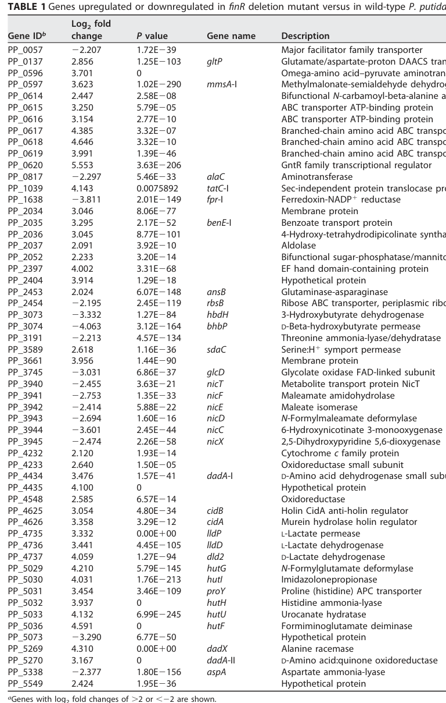

nicT (PP_3940, UniProt Q88FY6) encodes a predicted multi-pass inner-membrane secondary transporter of the major facilitator superfamily (MFS) embedded in the aerobic nicotinic acid (nicotinate) degradation gene cluster (the nicCDEFTP operon) of Pseudomonas putida KT2440. The protein has 12 predicted transmembrane helices and belongs to the MFS_1/MFS_ExuT_GudP-like family. No direct biochemical transport assay has been reported for NicT itself, but the operon/pathway context, FinR-dependent co-regulation with other nic genes, and the well-established nicotinate-uptake function of the related NiaP family of MFS transporters together make nicotinate (nicotinic acid) the most parsimonious substrate, with import into the cytoplasm enabling NA catabolism (NA -> 6-hydroxynicotinate -> 2,5-dihydroxypyridine -> ... -> fumarate). The specific substrate and transport directionality of NicT remain experimentally unresolved.
| GO Term | Evidence | Action | Reason |
|---|---|---|---|
|
GO:0005886
plasma membrane
|
IEA
GO_REF:0000118 |
ACCEPT |
Summary: Plasma (inner) membrane localization is appropriate for this multi-pass MFS transporter.
Reason: UniProt describes NicT as a multi-pass membrane protein (12 predicted TM helices), and as an MFS secondary transporter it functions in the bacterial inner (cytoplasmic/plasma) membrane. The falcon deep research reaches the same conclusion from family assignment and homolog localization.
Supporting Evidence:
file:PSEPK/nicT/nicT-uniprot.txt
SUBCELLULAR LOCATION: Membrane
file:PSEPK/nicT/nicT-goa.tsv
GO:0005886 plasma membrane
file:PSEPK/nicT/nicT-deep-research-falcon.md
Because NicT is an MFS transporter, its expected localization is the **inner (cytoplasmic) membrane** of this Gram-negative bacterium.
|
|
GO:0016020
membrane
|
IEA
GO_REF:0000120 |
KEEP AS NON CORE |
Summary: Membrane is correct but less specific than plasma membrane for NicT.
Reason: Retain the generic membrane annotation as a parent/location background term while treating GO:0005886 plasma membrane as the informative location for this inner-membrane MFS transporter.
Supporting Evidence:
file:PSEPK/nicT/nicT-uniprot.txt
Multi-pass membrane
file:PSEPK/nicT/nicT-goa.tsv
GO:0016020 membrane
|
|
GO:0022857
transmembrane transporter activity
|
IEA
GO_REF:0000120 |
ACCEPT |
Summary: Transmembrane transporter activity captures the best-supported molecular function for NicT; this is its core function.
Reason: NicT is an MFS-family secondary transporter (InterPro IPR011701/IPR020846/IPR036259, Pfam MFS_1) embedded in the nicotinate degradation cluster. The falcon deep research confirms the MFS secondary-transporter assignment and the pathway/operon context. The specific transported substrate is not experimentally resolved for NicT itself, so the generic transporter MF term is retained; a substrate-specific term such as GO:0090416 (nicotinate transmembrane transporter activity) may be warranted pending experimental confirmation of the substrate.
Supporting Evidence:
file:PSEPK/nicT/nicT-uniprot.txt
Probable transporter, possibly involved in the aerobic
file:PSEPK/nicT/nicT-goa.tsv
GO:0022857 transmembrane transporter activity
file:PSEPK/nicT/nicT-deep-research-falcon.md
encodes a predicted **secondary transporter** in the **major facilitator superfamily (MFS)** that is genomically embedded in the **nicotinic acid (nicotinate; NA) degradation** gene cluster
|
|
GO:0055085
transmembrane transport
|
IEA
GO_REF:0000002 |
ACCEPT |
Summary: Transmembrane transport is a well-supported process annotation for NicT; the most likely specific process is nicotinate uptake feeding aerobic NA catabolism.
Reason: The MFS transporter-family evidence and the nic-cluster/operon context support a transmembrane transport process. The falcon deep research argues, from operon context and the biochemically demonstrated nicotinate-uptake function of the related NiaP family, that NicT most plausibly imports nicotinate; this remains an inference pending a direct uptake assay, so the generic process term is retained; a substrate-specific process term such as GO:2001142 (nicotinate transport) may be warranted pending experimental confirmation of the substrate.
Supporting Evidence:
file:PSEPK/nicT/nicT-uniprot.txt
Probable transporter, possibly involved in the aerobic
file:PSEPK/nicT/nicT-goa.tsv
GO:0055085 transmembrane transport
file:PSEPK/nicT/nicT-deep-research-falcon.md
the most parsimonious functional hypothesis is that **KT2440 NicT transports nicotinate (or a closely related NA-family compound)** into the cytoplasm to enable catabolism. This remains an **inference** until Q88FY6 is directly tested.
|
Q: What substrate does NicT transport during aerobic nicotinate degradation (nicotinate, 6-hydroxynicotinate, or another intermediate), and in which direction?
Q: Is NicT a proton-motive-force-dependent symporter like other NiaP-family MFS nicotinate transporters?
Experiment: Measure energy-dependent uptake of radiolabeled nicotinate (and candidate intermediates such as 6-hydroxynicotinate) in wild-type, nicT deletion, and complemented P. putida KT2440 strains, and in a heterologous host expressing NicT, to directly establish substrate specificity and directionality.
Type: radiolabeled transport / uptake assay
Experiment: Test growth of a nicT deletion strain on nicotinate as sole carbon/energy source to assess whether NicT is required for efficient nicotinate utilization.
Type: growth phenotype assay
The research report should be a detailed narrative explaining the function, biological processes, and localization of the gene product. Citations should be given for all claims.
You should prioritize authoritative reviews and primary scientific literature when conducting research. You can supplement
this with annotations you find in gene/protein databases, but these can be outdated or inaccurate.
We are specifically interested in the primary function of the gene - for enzymes, what reaction is catalyzed, and what is the substrate specificity? For transporters, what is the substrate? For structural proteins or adapters, what is the broader structural role? For signaling molecules, what is the role in the pathway.
We are interested in where in or outside the cell the gene product carries out its function.
We are also interested in the signaling or biochemical pathways in which the gene functions. We are less interested in broad pleiotropic effects, except where these elucidate the precise role.
Include evidence where possible. We are interested in both experimental evidence as well as inference from structure, evolution, or bioinformatic analysis. Precise studies should be prioritized over high-throughput, where available.
The Pseudomonas putida KT2440 gene nicT (locus PP_3940, UniProt Q88FY6) encodes a predicted secondary transporter in the major facilitator superfamily (MFS) that is genomically embedded in the nicotinic acid (nicotinate; NA) degradation gene cluster and is consistently annotated as a “metabolite transport protein NicT.” (xiao2018finrregulatesexpression pages 2-3). Although direct biochemical transport assays for the KT2440 NicT protein itself were not found in the retrieved literature, multiple lines of evidence support its assignment as a nicotinate-pathway-associated transporter: (i) conserved pathway/operon context (nicCDEFTP), (ii) FinR-dependent transcriptomic regulation of nicT, and (iii) strong functional precedent that NiaP-family MFS transporters transport nicotinate via energy-dependent uptake (xiao2018finrregulatesexpression pages 3-4, brickman2018thebordetellabronchiseptica pages 7-7, jeanguenin2012comparativegenomicsand pages 4-5).
In aerobic bacteria, nicotinic acid can be used as a carbon/energy source by conversion through a pathway that ultimately yields fumarate, which feeds into the TCA cycle (das2023nicotinicacidcatabolism pages 1-2, brickman2018thebordetellabronchiseptica pages 4-4). In the widely cited KT2440 model, NA is converted to 6-hydroxynicotinic acid (6HNA), then to 2,5-dihydroxypyridine (2,5-DHP), and then ring-opened and processed to fumarate (das2023nicotinicacidcatabolism pages 1-2, brickman2018thebordetellabronchiseptica pages 4-4).
The major facilitator superfamily comprises secondary transporters that commonly use proton-motive force (H+ symport/antiport) to move small molecules across the cytoplasmic membrane. A relevant MFS subgroup is the NiaP family, for which multiple members have been biochemically shown to mediate concentrative, energy-dependent nicotinate uptake with narrow specificity (jeanguenin2012comparativegenomicsand pages 6-7, jeanguenin2012comparativegenomicsand pages 4-5).
Multiple sources describe the KT2440 nic locus as three operons:
* nicAB: enzymes converting NA → 6HNA (das2023nicotinicacidcatabolism pages 1-2, brickman2018thebordetellabronchiseptica pages 7-7)
* nicCDEFTP (divergently transcribed relative to nicXR): includes nicT as part of the operon name and contains enzymes for downstream processing steps (brickman2018thebordetellabronchiseptica pages 7-7, das2023nicotinicacidcatabolism pages 1-2)
* nicXR: includes genes for ring cleavage/processing and regulation by MarR-type NicR (brickman2018thebordetellabronchiseptica pages 7-7, das2023nicotinicacidcatabolism pages 1-2)
A consistent stepwise description is:
1. NicA/NicB convert NA to 6HNA (das2023nicotinicacidcatabolism pages 1-2).
2. NicC (6-hydroxynicotinate 3-monooxygenase) converts 6HNA to 2,5-DHP (das2023nicotinicacidcatabolism pages 1-2, brickman2018thebordetellabronchiseptica pages 4-4).
3. NicX catalyzes ring opening to N-formylmaleamic acid, then NicD (deformylase) yields maleamic acid + formate, NicF yields maleic acid + NH3, and NicE converts maleic acid → fumarate (brickman2018thebordetellabronchiseptica pages 4-4, das2023nicotinicacidcatabolism pages 1-2).
In this context, NicT is best interpreted as a transport component supporting NA catabolism—most plausibly mediating uptake of NA (or potentially a closely related precursor/intermediate)—but this remains an inference given the absence of KT2440 NicT uptake assays in retrieved papers (xiao2018finrregulatesexpression pages 2-3, das2023nicotinicacidcatabolism pages 1-2).
In P. putida KT2440, deletion of finR alters expression of multiple nic genes; importantly, PP_3940/nicT is significantly decreased in the ΔfinR background with RNA-seq log2 fold change = −2.455 and P = 3.63×10−21 (xiao2018finrregulatesexpression pages 3-4, xiao2018finrregulatesexpression media aa8f35ab). This supports that nicT is under regulatory control connected to NA catabolism, even if not the primary regulated promoter measured in that study.
Xiao et al. constructed promoter–lacZ reporters for several nic promoters. However, nicT promoter activity was “too low to be detected” under the tested conditions (xiao2018finrregulatesexpression pages 3-4). The authors also interpret NA-independent expression patterns as consistent with additional constitutive promoters upstream of nicS, nicT, and nicR, suggesting nicT may not be strongly inducible in their reporter context or that the active promoter region was not captured in the construct (xiao2018finrregulatesexpression pages 3-4).
Xiao et al. provide direct evidence that NA/6HNA induce key catabolic operons (notably nicC and nicX) and that FinR and NicR bind those promoter regions, but NicT-specific binding/induction is not shown in the retrieved excerpts (xiao2018finrregulatesexpression pages 1-2). Independent pathway summaries also emphasize that 6HNA is the inducer of nicC expression in the KT2440 pathway logic (brickman2018thebordetellabronchiseptica pages 7-7).
No retrieved paper provided a transport assay (radiolabeled uptake, growth rescue by transporter expression, or reconstitution) directly testing substrate(s) for P. putida KT2440 NicT (xiao2018finrregulatesexpression pages 2-3, brickman2018thebordetellabronchiseptica pages 7-7).
Jeanguenin et al. experimentally demonstrated that NiaP-family MFS transporters mediate energy-dependent nicotinate uptake using radiolabeled [14C]nicotinate in Lactococcus lactis expression assays (jeanguenin2012comparativegenomicsand pages 2-4, jeanguenin2012comparativegenomicsand pages 1-2). Key quantitative findings that define the functional signature of these transporters include:
* Uptake that is >20-fold higher than controls and saturates rapidly (≈60 s timescale in representative experiments) (jeanguenin2012comparativegenomicsand pages 2-4).
* Concentrative transport: ~1.7 μM external nicotinate to ~65 μM intracellular (≈38-fold) (jeanguenin2012comparativegenomicsand pages 4-5).
* Energy dependence: stimulated by glucose and inhibited by 2-deoxyglucose; inhibition is relieved by glucose, consistent with dependence on cellular energetic state/proton motive force (jeanguenin2012comparativegenomicsand pages 4-5).
* Proposed H+ symport as a plausible mechanism (common for MFS) (jeanguenin2012comparativegenomicsand pages 6-7).
Given NicT’s annotation as an MFS-family transporter embedded in the nicotinate degradation locus, the most parsimonious functional hypothesis is that KT2440 NicT transports nicotinate (or a closely related NA-family compound) into the cytoplasm to enable catabolism. This remains an inference until Q88FY6 is directly tested.
Because NicT is an MFS transporter, its expected localization is the inner (cytoplasmic) membrane of this Gram-negative bacterium. While no NicT-specific localization experiment was retrieved, Jeanguenin et al. report plasma-membrane localization for plant NiaP homologs by GFP fusion, consistent with the general membrane-transporter nature of this family (jeanguenin2012comparativegenomicsand pages 6-7, jeanguenin2012comparativegenomicsand pages 7-9). This supports assigning NicT to the cytoplasmic membrane as the site of function.
A 2023 study in Microbiology Spectrum leveraged the established KT2440 model to interpret a Burkholderia nic cluster, reiterating that the KT2440 pathway is “elaborately characterized” and summarizing the operons nicAB, nicCDEFTP, and nicXR and the NA→fumarate route (das2023nicotinicacidcatabolism pages 1-2). Importantly, this work notes that nicT in a homologous nic cluster encodes an MFS transporter, reinforcing that nicT-like genes are commonly considered uptake components in nicotinate catabolic loci (das2023nicotinicacidcatabolism pages 2-5, das2023nicotinicacidcatabolism pages 5-7). Although not an experiment on KT2440 NicT, this is a recent, authoritative consolidation of the pathway context and transporter annotation.
A 2024 thesis mentioning P. putida KT2440 and UniProt updates was retrieved, but it did not provide NicT-specific functional data in the available snippets (schultes2024oxyfunctionalizationreactionswith pages 1-6). Therefore, the latest directly relevant advances in the retrieved corpus primarily concern pathway-level comparative biology rather than new NicT transport biochemistry.
While the retrieved sources do not describe a direct industrial deployment of NicT as a standalone component, the KT2440 nicotinate degradation pathway is relevant to:
* Environmental metabolism and biodegradation: NA is a natural and anthropogenic compound; bacteria capable of using NA as sole carbon/energy source can contribute to nutrient cycling (brickman2018thebordetellabronchiseptica pages 3-3).
* Systems and synthetic biology chassis considerations: KT2440 is widely used as an engineering host. Understanding nicotinate uptake and degradation can matter for media formulation, metabolite cross-feeding, and robustness when NA or analogs are present.
The table below separates direct KT2440 nicT evidence from comparative functional inference.
| Claim/annotation | Evidence type (experimental/omics/comparative inference) | Key details (include quantitative values like log2FC and P-value; promoter activity notes; operon context) | Source (authors, year, journal) | URL | Pub date (month/year) | Citation ID |
|---|---|---|---|---|---|---|
| nicT is PP_3940 in Pseudomonas putida KT2440 and is annotated as “metabolite transport protein NicT” within the nicotinic acid degradation cluster | Omics/annotation | Table of differentially expressed genes identifies PP_3940 as nicT; part of the 11-gene nic cluster involved in aerobic nicotinic acid (NA) degradation | Xiao et al., 2018, Applied and Environmental Microbiology | https://doi.org/10.1128/AEM.01210-18 | 10/2018 | (xiao2018finrregulatesexpression pages 2-3) |
| nicT expression decreases in a ΔfinR mutant, linking nicT to FinR-dependent nic-cluster regulation | Omics with RT-qPCR-supported regulatory interpretation | RNA-seq reports log2FC = -2.455, P = 3.63E-21 for PP_3940/nicT in the finR deletion background; authors interpret this as reduced nicT expression when FinR is absent | Xiao et al., 2018, Applied and Environmental Microbiology | https://doi.org/10.1128/AEM.01210-18 | 10/2018 | (xiao2018finrregulatesexpression pages 2-3, xiao2018finrregulatesexpression pages 3-4, xiao2018finrregulatesexpression media aa8f35ab) |
| nicT likely lies in/near a constitutively expressed nicTP transcriptional unit rather than a strongly inducible promoter detectable in reporter assays | Experimental promoter-reporter plus inference | Authors propose “additional constitutive promoters” upstream of nicS, nicT, and nicR because of NA-independent expression of nicS, nicTP, and nicR operons; in lacZ reporter assays, nicT promoter activity was too low to detect | Xiao et al., 2018, Applied and Environmental Microbiology | https://doi.org/10.1128/AEM.01210-18 | 10/2018 | (xiao2018finrregulatesexpression pages 3-4) |
| There is no direct NicT-specific evidence in Xiao et al. for NA/6HNA induction or FinR/NicR binding to the nicT promoter | Negative evidence from targeted experiments | FinR and NicR binding and NA/6HNA induction were demonstrated for nicC and nicX promoters, but the provided evidence does not report EMSA/binding data or direct induction data for nicT; nicT reporter signal was undetectable | Xiao et al., 2018, Applied and Environmental Microbiology | https://doi.org/10.1128/AEM.01210-18 | 10/2018 | (xiao2018finrregulatesexpression pages 3-4, xiao2018finrregulatesexpression pages 1-2) |
| In pathway summaries, nicT is part of the canonical P. putida KT2440 nic locus organized as nicAB, nicCDEFTP, and nicXR | Comparative/pathway literature synthesis | Recent review-like comparative papers cite KT2440 as the reference system and place nicT in the nicCDEFTP operon; the pathway converts NA → 6HNA → 2,5-DHP → fumarate | Das et al., 2023, Microbiology Spectrum; Brickman & Armstrong, 2018, Molecular Microbiology | https://doi.org/10.1128/spectrum.04457-22 ; https://doi.org/10.1111/mmi.13943 | 06/2023; 05/2018 | (das2023nicotinicacidcatabolism pages 1-2, brickman2018thebordetellabronchiseptica pages 7-7) |
| NicT is commonly described as an MFS-family transporter associated with nicotinate catabolism, but direct biochemical proof for P. putida NicT itself is limited | Comparative inference | Das et al. note nicT in a homologous nic cluster as encoding a major facilitator superfamily (MFS) transporter; for P. putida KT2440, the available excerpts support cluster membership and annotation, but no direct uptake assay for Q88FY6 is reported | Das et al., 2023, Microbiology Spectrum; Xiao et al., 2018, Applied and Environmental Microbiology | https://doi.org/10.1128/spectrum.04457-22 ; https://doi.org/10.1128/AEM.01210-18 | 06/2023; 10/2018 | (das2023nicotinicacidcatabolism pages 2-5, das2023nicotinicacidcatabolism pages 5-7, xiao2018finrregulatesexpression pages 2-3) |
| The strongest substrate-level evidence comes from NiaP-family transporters, a subgroup of MFS proteins that transport nicotinate via energy-dependent uptake; this supports, but does not prove, a nicotinate-transport role for NicT | Comparative functional inference | Heterologous expression of bacterial NiaP proteins in Lactococcus lactis showed rapid, energy-dependent [^14C]nicotinate uptake, >20-fold over controls; uptake was concentrative (~1.7 µM external to ~65 µM intracellular; 38-fold) and consistent with H+ symport. These data are for NiaP homologs, not directly for PP_3940/Q88FY6 | Jeanguenin et al., 2012, Functional & Integrative Genomics | https://doi.org/10.1007/s10142-011-0255-y | 09/2012 | (jeanguenin2012comparativegenomicsand pages 2-4, jeanguenin2012comparativegenomicsand pages 6-7, jeanguenin2012comparativegenomicsand pages 4-5) |
| Cellular localization of NicT is inferred to be the inner membrane/plasma membrane from transporter family assignment, not directly shown for Q88FY6 in the retrieved literature | Comparative inference | NiaP-family proteins are MFS transporters and plant NiaP homologs localize to the plasma membrane by GFP fusion; NicT is therefore most plausibly a membrane transporter in KT2440, but no NicT-specific localization assay was found | Jeanguenin et al., 2012, Functional & Integrative Genomics | https://doi.org/10.1007/s10142-011-0255-y | 09/2012 | (jeanguenin2012comparativegenomicsand pages 6-7, jeanguenin2012comparativegenomicsand pages 7-9) |
Table: This table compiles the strongest available evidence for nicT (PP_3940; UniProt Q88FY6) in Pseudomonas putida KT2440, separating direct organism-specific data from broader comparative inference. It is useful for assessing which aspects of NicT function are experimentally supported versus still inferred.
Xiao et al. (2018) Table 1 and associated figures were visually inspected to confirm the ΔfinR differential expression statistics for PP_3940/nicT and the low/undetectable nicT promoter–lacZ activity reported in the study’s promoter assays (xiao2018finrregulatesexpression media aa8f35ab, xiao2018finrregulatesexpression media 6c2ec821, xiao2018finrregulatesexpression media 028c8b16).
Within the currently retrievable evidence, nicT (PP_3940; UniProt Q88FY6) is best annotated as a nicotinate-pathway-associated MFS transporter in P. putida KT2440. The most defensible substrate hypothesis is nicotinic acid (nicotinate) uptake in support of NA catabolism, supported indirectly by operon/pathway context and strong biochemical evidence for nicotinate transport by closely related MFS (NiaP-family) transporters. However, direct substrate specificity and mechanism for Q88FY6 remain to be experimentally validated.
References
(xiao2018finrregulatesexpression pages 2-3): Yujie Xiao, Wenjing Zhu, Huizhong Liu, Hailing Nie, Wenli Chen, and Qiaoyun Huang. Finr regulates expression of nicc and nicx operons, involved in nicotinic acid degradation in pseudomonas putida kt2440. Applied and Environmental Microbiology, Oct 2018. URL: https://doi.org/10.1128/aem.01210-18, doi:10.1128/aem.01210-18. This article has 10 citations and is from a peer-reviewed journal.
(xiao2018finrregulatesexpression pages 3-4): Yujie Xiao, Wenjing Zhu, Huizhong Liu, Hailing Nie, Wenli Chen, and Qiaoyun Huang. Finr regulates expression of nicc and nicx operons, involved in nicotinic acid degradation in pseudomonas putida kt2440. Applied and Environmental Microbiology, Oct 2018. URL: https://doi.org/10.1128/aem.01210-18, doi:10.1128/aem.01210-18. This article has 10 citations and is from a peer-reviewed journal.
(brickman2018thebordetellabronchiseptica pages 7-7): Timothy J. Brickman and Sandra K. Armstrong. The bordetella bronchiseptica nic locus encodes a nicotinic acid degradation pathway and the 6‐hydroxynicotinate‐responsive regulator bpsr. Molecular Microbiology, 108:397-409, May 2018. URL: https://doi.org/10.1111/mmi.13943, doi:10.1111/mmi.13943. This article has 13 citations and is from a domain leading peer-reviewed journal.
(jeanguenin2012comparativegenomicsand pages 4-5): Linda Jeanguenin, Aurora Lara-Núñez, Dmitry A. Rodionov, Andrei L. Osterman, Nataliya Y. Komarova, Doris Rentsch, Jesse F. Gregory, and Andrew D. Hanson. Comparative genomics and functional analysis of the niap family uncover nicotinate transporters from bacteria, plants, and mammals. Functional & Integrative Genomics, 12:25-34, Sep 2012. URL: https://doi.org/10.1007/s10142-011-0255-y, doi:10.1007/s10142-011-0255-y. This article has 48 citations and is from a peer-reviewed journal.
(das2023nicotinicacidcatabolism pages 1-2): Joyati Das, Rahul Kumar, Sunil Kumar Yadav, and Gopaljee Jha. Nicotinic acid catabolism modulates bacterial mycophagy in burkholderia gladioli strain ngj1. Microbiology Spectrum, Jun 2023. URL: https://doi.org/10.1128/spectrum.04457-22, doi:10.1128/spectrum.04457-22. This article has 6 citations and is from a domain leading peer-reviewed journal.
(brickman2018thebordetellabronchiseptica pages 4-4): Timothy J. Brickman and Sandra K. Armstrong. The bordetella bronchiseptica nic locus encodes a nicotinic acid degradation pathway and the 6‐hydroxynicotinate‐responsive regulator bpsr. Molecular Microbiology, 108:397-409, May 2018. URL: https://doi.org/10.1111/mmi.13943, doi:10.1111/mmi.13943. This article has 13 citations and is from a domain leading peer-reviewed journal.
(jeanguenin2012comparativegenomicsand pages 6-7): Linda Jeanguenin, Aurora Lara-Núñez, Dmitry A. Rodionov, Andrei L. Osterman, Nataliya Y. Komarova, Doris Rentsch, Jesse F. Gregory, and Andrew D. Hanson. Comparative genomics and functional analysis of the niap family uncover nicotinate transporters from bacteria, plants, and mammals. Functional & Integrative Genomics, 12:25-34, Sep 2012. URL: https://doi.org/10.1007/s10142-011-0255-y, doi:10.1007/s10142-011-0255-y. This article has 48 citations and is from a peer-reviewed journal.
(xiao2018finrregulatesexpression media aa8f35ab): Yujie Xiao, Wenjing Zhu, Huizhong Liu, Hailing Nie, Wenli Chen, and Qiaoyun Huang. Finr regulates expression of nicc and nicx operons, involved in nicotinic acid degradation in pseudomonas putida kt2440. Applied and Environmental Microbiology, Oct 2018. URL: https://doi.org/10.1128/aem.01210-18, doi:10.1128/aem.01210-18. This article has 10 citations and is from a peer-reviewed journal.
(xiao2018finrregulatesexpression pages 1-2): Yujie Xiao, Wenjing Zhu, Huizhong Liu, Hailing Nie, Wenli Chen, and Qiaoyun Huang. Finr regulates expression of nicc and nicx operons, involved in nicotinic acid degradation in pseudomonas putida kt2440. Applied and Environmental Microbiology, Oct 2018. URL: https://doi.org/10.1128/aem.01210-18, doi:10.1128/aem.01210-18. This article has 10 citations and is from a peer-reviewed journal.
(jeanguenin2012comparativegenomicsand pages 2-4): Linda Jeanguenin, Aurora Lara-Núñez, Dmitry A. Rodionov, Andrei L. Osterman, Nataliya Y. Komarova, Doris Rentsch, Jesse F. Gregory, and Andrew D. Hanson. Comparative genomics and functional analysis of the niap family uncover nicotinate transporters from bacteria, plants, and mammals. Functional & Integrative Genomics, 12:25-34, Sep 2012. URL: https://doi.org/10.1007/s10142-011-0255-y, doi:10.1007/s10142-011-0255-y. This article has 48 citations and is from a peer-reviewed journal.
(jeanguenin2012comparativegenomicsand pages 1-2): Linda Jeanguenin, Aurora Lara-Núñez, Dmitry A. Rodionov, Andrei L. Osterman, Nataliya Y. Komarova, Doris Rentsch, Jesse F. Gregory, and Andrew D. Hanson. Comparative genomics and functional analysis of the niap family uncover nicotinate transporters from bacteria, plants, and mammals. Functional & Integrative Genomics, 12:25-34, Sep 2012. URL: https://doi.org/10.1007/s10142-011-0255-y, doi:10.1007/s10142-011-0255-y. This article has 48 citations and is from a peer-reviewed journal.
(jeanguenin2012comparativegenomicsand pages 7-9): Linda Jeanguenin, Aurora Lara-Núñez, Dmitry A. Rodionov, Andrei L. Osterman, Nataliya Y. Komarova, Doris Rentsch, Jesse F. Gregory, and Andrew D. Hanson. Comparative genomics and functional analysis of the niap family uncover nicotinate transporters from bacteria, plants, and mammals. Functional & Integrative Genomics, 12:25-34, Sep 2012. URL: https://doi.org/10.1007/s10142-011-0255-y, doi:10.1007/s10142-011-0255-y. This article has 48 citations and is from a peer-reviewed journal.
(das2023nicotinicacidcatabolism pages 2-5): Joyati Das, Rahul Kumar, Sunil Kumar Yadav, and Gopaljee Jha. Nicotinic acid catabolism modulates bacterial mycophagy in burkholderia gladioli strain ngj1. Microbiology Spectrum, Jun 2023. URL: https://doi.org/10.1128/spectrum.04457-22, doi:10.1128/spectrum.04457-22. This article has 6 citations and is from a domain leading peer-reviewed journal.
(das2023nicotinicacidcatabolism pages 5-7): Joyati Das, Rahul Kumar, Sunil Kumar Yadav, and Gopaljee Jha. Nicotinic acid catabolism modulates bacterial mycophagy in burkholderia gladioli strain ngj1. Microbiology Spectrum, Jun 2023. URL: https://doi.org/10.1128/spectrum.04457-22, doi:10.1128/spectrum.04457-22. This article has 6 citations and is from a domain leading peer-reviewed journal.
(brickman2018thebordetellabronchiseptica pages 3-3): Timothy J. Brickman and Sandra K. Armstrong. The bordetella bronchiseptica nic locus encodes a nicotinic acid degradation pathway and the 6‐hydroxynicotinate‐responsive regulator bpsr. Molecular Microbiology, 108:397-409, May 2018. URL: https://doi.org/10.1111/mmi.13943, doi:10.1111/mmi.13943. This article has 13 citations and is from a domain leading peer-reviewed journal.
(xiao2018finrregulatesexpression media 6c2ec821): Yujie Xiao, Wenjing Zhu, Huizhong Liu, Hailing Nie, Wenli Chen, and Qiaoyun Huang. Finr regulates expression of nicc and nicx operons, involved in nicotinic acid degradation in pseudomonas putida kt2440. Applied and Environmental Microbiology, Oct 2018. URL: https://doi.org/10.1128/aem.01210-18, doi:10.1128/aem.01210-18. This article has 10 citations and is from a peer-reviewed journal.
(xiao2018finrregulatesexpression media 028c8b16): Yujie Xiao, Wenjing Zhu, Huizhong Liu, Hailing Nie, Wenli Chen, and Qiaoyun Huang. Finr regulates expression of nicc and nicx operons, involved in nicotinic acid degradation in pseudomonas putida kt2440. Applied and Environmental Microbiology, Oct 2018. URL: https://doi.org/10.1128/aem.01210-18, doi:10.1128/aem.01210-18. This article has 10 citations and is from a peer-reviewed journal.

id: Q88FY6
gene_symbol: nicT
product_type: PROTEIN
status: DRAFT
taxon:
id: NCBITaxon:160488
label: Pseudomonas putida (strain ATCC 47054 / DSM 6125 / CFBP 8728 / NCIMB 11950 / KT2440)
description: nicT (PP_3940, UniProt Q88FY6) encodes a predicted multi-pass inner-membrane
secondary transporter of the major facilitator superfamily (MFS) embedded in the
aerobic nicotinic acid (nicotinate) degradation gene cluster (the nicCDEFTP operon)
of Pseudomonas putida KT2440. The protein has 12 predicted transmembrane helices
and belongs to the MFS_1/MFS_ExuT_GudP-like family. No direct biochemical transport
assay has been reported for NicT itself, but the operon/pathway context, FinR-dependent
co-regulation with other nic genes, and the well-established nicotinate-uptake function
of the related NiaP family of MFS transporters together make nicotinate (nicotinic
acid) the most parsimonious substrate, with import into the cytoplasm enabling NA
catabolism (NA -> 6-hydroxynicotinate -> 2,5-dihydroxypyridine -> ... -> fumarate).
The specific substrate and transport directionality of NicT remain experimentally
unresolved.
existing_annotations:
- term:
id: GO:0005886
label: plasma membrane
evidence_type: IEA
original_reference_id: GO_REF:0000118
review:
summary: Plasma (inner) membrane localization is appropriate for this multi-pass
MFS transporter.
action: ACCEPT
reason: UniProt describes NicT as a multi-pass membrane protein (12 predicted TM
helices), and as an MFS secondary transporter it functions in the bacterial inner
(cytoplasmic/plasma) membrane. The falcon deep research reaches the same conclusion
from family assignment and homolog localization.
supported_by:
- reference_id: file:PSEPK/nicT/nicT-uniprot.txt
supporting_text: 'SUBCELLULAR LOCATION: Membrane'
- reference_id: file:PSEPK/nicT/nicT-goa.tsv
supporting_text: "GO:0005886\tplasma membrane"
- reference_id: file:PSEPK/nicT/nicT-deep-research-falcon.md
supporting_text: Because NicT is an MFS transporter, its expected localization
is the **inner (cytoplasmic) membrane** of this Gram-negative bacterium.
- term:
id: GO:0016020
label: membrane
evidence_type: IEA
original_reference_id: GO_REF:0000120
review:
summary: Membrane is correct but less specific than plasma membrane for NicT.
action: KEEP_AS_NON_CORE
reason: Retain the generic membrane annotation as a parent/location background term
while treating GO:0005886 plasma membrane as the informative location for this
inner-membrane MFS transporter.
supported_by:
- reference_id: file:PSEPK/nicT/nicT-uniprot.txt
supporting_text: Multi-pass membrane
- reference_id: file:PSEPK/nicT/nicT-goa.tsv
supporting_text: "GO:0016020\tmembrane"
- term:
id: GO:0022857
label: transmembrane transporter activity
evidence_type: IEA
original_reference_id: GO_REF:0000120
review:
summary: Transmembrane transporter activity captures the best-supported molecular
function for NicT; this is its core function.
action: ACCEPT
reason: NicT is an MFS-family secondary transporter (InterPro IPR011701/IPR020846/IPR036259,
Pfam MFS_1) embedded in the nicotinate degradation cluster. The falcon deep research
confirms the MFS secondary-transporter assignment and the pathway/operon context.
The specific transported substrate is not experimentally resolved for NicT itself,
so the generic transporter MF term is retained; a substrate-specific term such
as GO:0090416 (nicotinate transmembrane transporter activity) may be warranted
pending experimental confirmation of the substrate.
supported_by:
- reference_id: file:PSEPK/nicT/nicT-uniprot.txt
supporting_text: Probable transporter, possibly involved in the aerobic
- reference_id: file:PSEPK/nicT/nicT-goa.tsv
supporting_text: "GO:0022857\ttransmembrane transporter activity"
- reference_id: file:PSEPK/nicT/nicT-deep-research-falcon.md
supporting_text: encodes a predicted **secondary transporter** in the **major
facilitator superfamily (MFS)** that is genomically embedded in the **nicotinic
acid (nicotinate; NA) degradation** gene cluster
- term:
id: GO:0055085
label: transmembrane transport
evidence_type: IEA
original_reference_id: GO_REF:0000002
review:
summary: Transmembrane transport is a well-supported process annotation for NicT;
the most likely specific process is nicotinate uptake feeding aerobic NA catabolism.
action: ACCEPT
reason: The MFS transporter-family evidence and the nic-cluster/operon context support
a transmembrane transport process. The falcon deep research argues, from operon
context and the biochemically demonstrated nicotinate-uptake function of the related
NiaP family, that NicT most plausibly imports nicotinate; this remains an inference
pending a direct uptake assay, so the generic process term is retained; a substrate-specific
process term such as GO:2001142 (nicotinate transport) may be warranted pending
experimental confirmation of the substrate.
supported_by:
- reference_id: file:PSEPK/nicT/nicT-uniprot.txt
supporting_text: Probable transporter, possibly involved in the aerobic
- reference_id: file:PSEPK/nicT/nicT-goa.tsv
supporting_text: "GO:0055085\ttransmembrane transport"
- reference_id: file:PSEPK/nicT/nicT-deep-research-falcon.md
supporting_text: the most parsimonious functional hypothesis is that **KT2440
NicT transports nicotinate (or a closely related NA-family compound)** into the
cytoplasm to enable catabolism. This remains an **inference** until Q88FY6 is
directly tested.
references:
- id: GO_REF:0000118
title: TreeGrafter-generated GO annotations
findings:
- statement: TreeGrafter supplied plasma membrane localization for NicT.
- id: GO_REF:0000120
title: Combined automated GO annotation using multiple IEA methods
findings:
- statement: Automated annotations supply membrane and transporter terms for NicT.
- id: GO_REF:0000002
title: Gene Ontology annotation through association of InterPro records with GO terms
findings:
- statement: InterPro supplied the broad transmembrane transport process annotation.
- id: PMID:18678916
title: 'Deciphering the genetic determinants for aerobic nicotinic acid degradation:
the nic cluster from Pseudomonas putida KT2440.'
findings:
- reference_section_type: ABSTRACT
supporting_text: We have characterized a gene cluster (nic genes) from Pseudomonas
putida KT2440 responsible for the aerobic NA degradation in this bacterium and
when expressed in heterologous hosts.
- id: PMID:21450002
title: A finely tuned regulatory circuit of the nicotinic acid degradation pathway
in Pseudomonas putida.
findings:
- reference_section_type: ABSTRACT
supporting_text: 'The three NA-inducible catabolic operons, i.e. nicAB, encoding
the upper pathway that converts NA into 6-hydroxynicotinic acid (6HNA), and the
nicCDEFTP and nicXR operons, responsible for channelling 6HNA to the central metabolism,
are driven by the Pa, Pc and Px promoters respectively.'
- id: file:PSEPK/nicT/nicT-uniprot.txt
title: UniProtKB reviewed entry for nicT
findings:
- statement: UniProt identifies NicT as a probable membrane metabolite transporter
in the aerobic nicotinate degradation pathway.
- id: file:PSEPK/nicT/nicT-goa.tsv
title: QuickGO GOA annotations for nicT
findings:
- statement: The fetched GOA table contains the annotations reviewed for nicT.
- id: file:PSEPK/nicT/nicT-deep-research-falcon.md
title: Falcon deep research report for nicT (PP_3940; Q88FY6)
findings:
- reference_section_type: OTHER
supporting_text: encodes a predicted **secondary transporter** in the **major facilitator
superfamily (MFS)** that is genomically embedded in the **nicotinic acid (nicotinate;
NA) degradation** gene cluster
- reference_section_type: OTHER
supporting_text: A relevant MFS subgroup is the **NiaP family**, for which multiple
members have been biochemically shown to mediate **concentrative, energy-dependent
nicotinate uptake** with narrow specificity
- reference_section_type: OTHER
supporting_text: the most parsimonious functional hypothesis is that **KT2440 NicT
transports nicotinate (or a closely related NA-family compound)** into the cytoplasm
to enable catabolism. This remains an **inference** until Q88FY6 is directly tested.
- reference_section_type: OTHER
supporting_text: Because NicT is an MFS transporter, its expected localization is
the **inner (cytoplasmic) membrane** of this Gram-negative bacterium.
- reference_section_type: OTHER
supporting_text: importantly, **PP_3940/nicT** is significantly decreased in the
ΔfinR background with RNA-seq **log2 fold change = −2.455** and **P = 3.63×10−21**
- reference_section_type: OTHER
supporting_text: NA is converted to **6-hydroxynicotinic acid (6HNA)**, then to
**2,5-dihydroxypyridine (2,5-DHP)**, and then ring-opened and processed to **fumarate**
- reference_section_type: OTHER
supporting_text: '**nicT (PP_3940; UniProt Q88FY6)** is best annotated as a **nicotinate-pathway-associated
MFS transporter** in *P. putida* KT2440.'
core_functions:
- description: Multi-pass inner-membrane MFS secondary transporter in the aerobic nicotinic
acid (nicotinate) degradation cluster of P. putida KT2440; most plausibly mediates
nicotinate uptake into the cytoplasm to enable NA catabolism, although the specific
substrate has not been directly demonstrated for NicT.
molecular_function:
id: GO:0022857
label: transmembrane transporter activity
directly_involved_in:
- id: GO:0055085
label: transmembrane transport
locations:
- id: GO:0005886
label: plasma membrane
supported_by:
- reference_id: file:PSEPK/nicT/nicT-uniprot.txt
supporting_text: Probable transporter, possibly involved in the aerobic
- reference_id: file:PSEPK/nicT/nicT-uniprot.txt
supporting_text: 'SUBCELLULAR LOCATION: Membrane'
- reference_id: file:PSEPK/nicT/nicT-deep-research-falcon.md
supporting_text: encodes a predicted **secondary transporter** in the **major facilitator
superfamily (MFS)** that is genomically embedded in the **nicotinic acid (nicotinate;
NA) degradation** gene cluster
- reference_id: file:PSEPK/nicT/nicT-deep-research-falcon.md
supporting_text: '**nicT (PP_3940; UniProt Q88FY6)** is best annotated as a **nicotinate-pathway-associated
MFS transporter** in *P. putida* KT2440.'
proposed_new_terms: []
suggested_questions:
- question: What substrate does NicT transport during aerobic nicotinate degradation
(nicotinate, 6-hydroxynicotinate, or another intermediate), and in which direction?
- question: Is NicT a proton-motive-force-dependent symporter like other NiaP-family
MFS nicotinate transporters?
suggested_experiments:
- description: Measure energy-dependent uptake of radiolabeled nicotinate (and candidate
intermediates such as 6-hydroxynicotinate) in wild-type, nicT deletion, and complemented
P. putida KT2440 strains, and in a heterologous host expressing NicT, to directly
establish substrate specificity and directionality.
experiment_type: radiolabeled transport / uptake assay
- description: Test growth of a nicT deletion strain on nicotinate as sole carbon/energy
source to assess whether NicT is required for efficient nicotinate utilization.
experiment_type: growth phenotype assay
{kind=link}